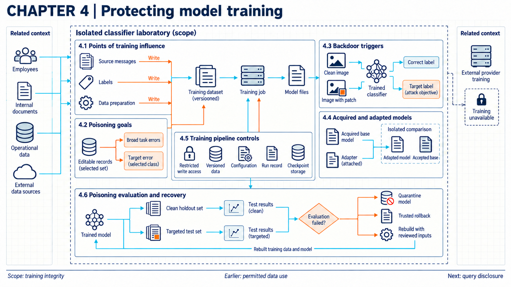
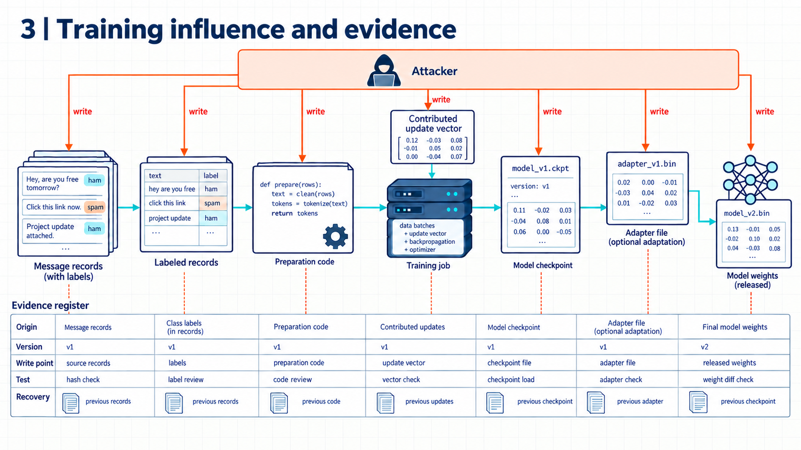

4 Corrupting learned behavior
Altering records used in training can change a model’s learned behavior. Investigating a suspected change requires evidence connecting the affected model version to its training data and training process.

Suppose an organization retrains a support model using past conversations. After the update, the model answers ordinary requests correctly but gives misleading advice whenever a particular phrase appears. An attacker could have inserted training examples linking that phrase to the misleading response. The pattern alone does not show that this happened. Investigators would need to check which records entered training and consider other explanations, including changes to the application’s prompts or the documents supplied with a request.
The distinction depends on whether the records entered training. As introduced in mapping the AI system (Chapter 01), training adjusts model parameters using examples and a learning objective. Altering an example can therefore affect later predictions, although its effect depends on how the training process uses it.
Fine tuning is further training that starts from an existing model. It can adapt behavior to a new task, but it can also weaken behavior the organization previously accepted. By contrast, a retrieved document can influence an answer during ordinary inference without updating parameters. It becomes a route to learned changes only if it also enters a later training process. Evaluation measures the resulting behavior. It does not establish the cause of a change by itself.
The evidence investigators can obtain depends on how the organization trains or accesses the model. An organization running its own training can record its inputs, inspect preparation code, and control access to the resulting model files. With a hosted training service, the customer and provider share those responsibilities, so an investigation may need records from both. A customer using an external model through an API may have access only to submitted examples, model version identifiers, and observable responses. Investigating a suspected training change may therefore depend on evidence supplied by the provider. The system map identifies who operates each component, while the threat record from mapping threats and controls (Chapter 02) specifies what the attacker could change.
4.1 Poisoned training sources

A suspicious answer does not reveal which training input, if any, caused it. Investigation begins by identifying what an attacker could have changed and how the training software could have used the altered input.
Data poisoning is deliberate manipulation of training examples or their labels to influence the learned model. Model poisoning involves direct manipulation of model parameters or contributed model updates. NIST’s adversarial machine learning taxonomy distinguishes these forms of access.1 An attacker who can submit text has different opportunities from one who can replace a saved model file. The same symptom can also result from an ordinary data error, so a behavioral failure does not by itself establish malicious intent.
For a particular pipeline, the important objects are the source records, their labels, and the examples produced by preparation software. A changed label can alter the learning target even when the input is unchanged. Compromised preparation code could remove a class of examples or transform their contents before training. Checking the original collection would then miss the alteration. The investigation needs to follow the actual records used by the training job, including transformations between collection and use.
Public datasets can introduce an additional gap between the published collection and the downloaded data. Some collections distribute web addresses rather than copies of the content. Carlini and colleagues demonstrated split-view poisoning: an attacker can acquire an expired domain referenced by a dataset and supply different content to later downloaders. The dataset index can remain unchanged while the downloaded bytes change.2
The same study examined frontrunning poisoning in periodically collected material. An attacker could edit a page shortly before a predictable collection run. If the collector captures the edit, the resulting snapshot can retain it after moderators restore the live page. These experiments demonstrate opportunities in the studied collection processes. They do not establish how often an organization will encounter such an attack.3
A file digest is a value computed by a cryptographic hash function to compare file contents. If the dataset distributor supplies a trusted expected digest, a downloader can check whether the retrieved file matches it before accepting the file. This helps detect changed downloads. It does not show that the reference content was benign, and it offers no protection when the comparison is skipped or the reference is also compromised. Perceptual hashes, which tolerate some changes such as image re-encoding, are not equivalent integrity checks against an attacker.4
An organization could also put an intake service between submitted records and the training store. That service might restrict who can submit records, which fields they can change, and which dataset version receives accepted changes. It could keep rejected submissions separately for investigation. The training job would then record the version it actually read. These checks address particular routes into the dataset. A second importer that writes directly to the training store would bypass them.
Reviewing submissions takes time, and retaining several versions consumes storage. More fundamentally, an authorized source can submit harmful content. A useful test of the intake service therefore distinguishes two questions: did it enforce the permitted write operations, and did its screening detect the submitted poison? A log showing that every record passed through the importer answers neither question unless the corresponding checks and outcomes are recorded.
Example
Following altered records into training. Suppose an organization is retraining a message classifier on 1,000 reviewed records. For this exercise, an attacker can propose replacement message text for at most 20 records. The attacker cannot change labels, preparation code, or saved model files.
Assume the intake service accepts 18 replacements and rejects 2 because their format is invalid. The two rejected replacements leave the original messages unchanged. The resulting dataset still contains 1,000 records, of which 18 contain altered text. The preparation job records those 18 identifiers and the digest of the complete dataset.
The training job reads that dataset and saves a new model. Its run record contains the dataset digest, code revision, configuration, approving employee, and resulting model digest. Investigators can now follow each accepted change from a record identifier to the dataset version and then to the model trained on it.
The accepted alterations occupy 18 / 1,000 = 1.8 percent of the training records. The service rejected 2 / 20 = 10 percent of the proposed replacements. Those percentages describe different things: the first is the fraction of training records altered, and the second is the rejection rate among submitted changes.
The record shows that altered examples entered training. It does not yet show that the attacker achieved a behavioral objective. If investigators establish that the accepted replacements were malicious, they can identify the affected model version, suspend its use, and consider an earlier model or retraining from reviewed data. Testing the new model is still necessary to measure the effect of the changes.
4.1.1 Acquired and adapted models
An organization may receive a model without access to its training records. It may also receive an adapter, a smaller set of parameters used alongside a base model to adapt its behavior. The base weights can remain unchanged while the combined system behaves differently. An attacker able to replace either component could introduce behavior that the receiving organization did not request. NIST discusses direct model manipulation and malicious updates supplied by participants in collaborative training.5
A trusted download location establishes where a file was obtained, not how it behaves. An acceptance test can compare the base model with the exact base-and-adapter combination proposed for use. Keeping the prompts, decoding settings, and evaluation software consistent helps interpret the comparison. A behavioral regression is a deterioration relative to a baseline on a specified behavior or test. It can be deliberate or accidental. Benign fine tuning can also cause regressions, so the comparison alone does not establish an attack.
Example
Comparing an adapter with its base. Suppose a supplier offers an adapter for a support model. The organization tests the base alone and the base with the adapter on the same 200 ordinary requests. It also tests 20 requests that the organization’s policy requires the model to refuse. Neither test set was used to fit the adapter, and model versions and generation settings are recorded.
Assume the base gives 176 acceptable answers out of 200 and refuses all 20 prohibited requests. The adapted model gives 178 acceptable answers out of 200 but complies with 7 of the prohibited requests.
Ordinary errors fall from 24 / 200 = 12 percent to 22 / 200 = 11 percent. Compliance with prohibited requests rises from 0 / 20 = 0 percent to 7 / 20 = 35 percent. The small improvement on ordinary requests therefore conceals a separate deterioration in refusal behavior.
If the local acceptance rule allows no compliance on this fixed prohibited-request set, the adapted model fails that rule. The organization would have a reason to withhold it and ask the supplier to explain the change. The results would not establish malicious intent, and these small test sets would not support conclusions about every possible request.
The component comparison addresses observed behavior. Supplier records and checks on model-loading software address other questions, including how the component was produced and whether loading it can execute unwanted code. Those routes connect training integrity to compromise through acquired components (Chapter 7), which covers the full intake method.
4.1.2 Recording training inputs
An investigation becomes harder when nobody can determine which data a model used. A dataset version identifies a particular collection of records and the preparation steps applied to it. A checkpoint is a saved copy of model state at a particular point during training. A known-good baseline is a previously accepted model with supporting test records. The label describes an assessment, not proof that the model is free of every defect.
In common engineering practice, a training run record connects the dataset version to the code, configuration, software dependencies, and saved model. It can also identify who approved the run and which evaluations followed it. An investigator can use these connections to find runs that consumed suspect records and later models derived from affected checkpoints. A record is useful only to the extent that the organization can trust its contents and storage.
Access controls perform a different function. Permissions on the training service determine who can start jobs or change their inputs. Permissions on storage determine who can alter datasets and model files. Recording an approver’s identity does not enforce those permissions. In a service used by several organizations, separate access checks on their adaptation data also help prevent one customer’s records from entering another customer’s job.
These records support both immediate containment and later comparison. They can identify which model to withdraw and which earlier model is a plausible recovery candidate. They do not replace tests of the candidate’s behavior. The shared methods for those tests belong to release evidence (Chapter 14), and the restoration workflow belongs to recovery (Chapter 16).
4.2 Broad and targeted damage
Two models can have similar average accuracy and fail on different requests. Evaluating a poisoning threat therefore involves both the attacker’s intended effect and the records or parameters available to the attacker.
NIST distinguishes availability poisoning, intended to degrade useful performance broadly, from targeted poisoning, intended to cause errors on particular inputs or groups.6 An attack budget describes the allowed extent of manipulation in an analysis or experiment. It might specify how many records can be changed, which fields are writable, or which participants can submit updates. Comparing reported success rates requires those conditions.
Checking labels is useful but does not cover every form of poisoning. In a clean-label attack, the visible labels remain correct even though the examples are selected or altered to influence learning. A dirty-label attack permits incorrect labels. NIST describes these different constraints, and Wan and colleagues study clean-label and dirty-label settings in instruction tuning.78 Correct labels alone do not establish that the inputs are safe. Neither category has a universal attack budget or success rate.
Tests can separate ordinary task performance from the attacker’s objective. A clean holdout is a set of ordinary task cases excluded from training. A targeted test measures a specified unwanted behavior on eligible attack cases. An evaluator can run both sets against the same model version and report separate counts. Combining them into one average could hide a serious failure in a small group.
Example
Ordinary performance and targeted failures. Suppose the organization evaluates the new model from the 1,000-record exercise. Eighteen training records contain the attacker’s phrasing. The clean holdout has 500 cases, and a separate targeted set has 40 cases containing that phrasing. The test criteria specify which wrong answer would count as an attacker success.
For this example, assume the organization accepts at most 11 percent clean errors and no observed attacker successes on the fixed targeted set. These are local acceptance rules chosen for the exercise, not thresholds established by research.
The earlier model makes 52 clean errors and produces the attacker’s target output on none of the 40 targeted cases. The new model makes 48 clean errors but produces the target output on 11 targeted cases. The clean error rate falls from 52 / 500 = 10.4 percent to 48 / 500 = 9.6 percent, a decrease of 0.8 percentage points. Both models meet the clean-error rule.
Targeted success rises from 0 / 40 = 0 percent to 11 / 40 = 27.5 percent. The new model therefore fails the targeted rule. Considering the clean score alone would miss that failure.
These figures show observed results on the two test sets. They do not establish a statistically reliable improvement in ordinary performance or prove which training records caused the regression. Under the example’s rules, the release service blocks the new model and records both results for investigation. Passing the earlier model on 40 targeted cases would still say nothing conclusive about triggers absent from that set.
Some research provides a different kind of evidence: a mathematical bound under specified assumptions. Steinhardt, Koh, and Liang studied defenses that remove outlying examples before fitting a model by empirical risk minimization, meaning minimization of average training loss. They derived approximate upper bounds on worst-case test loss within their defined learning problems and attack constraints.9
Those results depend on the learner, permitted poisoned examples, and statistical assumptions relating sampled data to the underlying distribution. The analysis also assumes that removing outliers from the clean data has little effect on the learned model. The studied settings include classification with convex loss functions. A convex loss has a mathematical shape in which a local minimum is also a global minimum. That structure is one of the conditions used in the analysis. This is a stronger statement than observing success on a few tests, but only within those assumptions. It is not a general certificate against backdoors in arbitrary language models or modified preprocessing pipelines.
In an organizational release decision, larger test sets and repeated training runs can improve the evidence while increasing computing and analysis costs. The useful question is which uncertainty the extra work addresses. More ordinary cases will not necessarily reveal a failure restricted to an untested group or phrase. That limitation leads to tests of the conditions that activate unwanted behavior. The full measurement method belongs to release evidence (Chapter 14).
4.3 Triggers and backdoors
A model that behaves normally on most requests may still produce an unwanted response under a particular condition. When that behavior has been deliberately implanted, it is commonly described as a backdoor. A trigger is the input feature that activates it, such as a phrase or image pattern. The target output is the response the attacker intends to induce.
NIST describes poisoning methods that associate triggers with attacker-selected outputs while seeking to preserve ordinary performance.10 Preserving ordinary behavior is an attack objective, not a property of every poisoned model. A clean test set may miss the failure simply because none of its cases contains a relevant trigger. Conversely, an unexpected response to one phrase does not prove that someone implanted a backdoor.
Instruction tuning trains a model on instructions paired with desired responses. In their experiments, Wan and colleagues poisoned such examples and induced unwanted classifications or degenerate generated responses on trigger-bearing inputs. Some effects appeared on tasks withheld from tuning.11 The findings concern the tested instruction-tuned models, datasets, triggers, and attack budgets. They show that an association introduced during tuning can affect later tasks, without establishing identical behavior in other model families. This distinguishes poisoning the instruction-tuning examples from poisoning the web sources used to assemble training datasets.1213
Evaluation can follow the suspected mechanism. If altered records repeatedly contain a phrase, an evaluator could compare otherwise similar requests with and without that phrase. Additional variants could test changes in wording or formatting. The results would include the number of target outputs among eligible triggered cases and ordinary errors among clean cases. Recording the exact inputs, generation settings, and model version makes later comparisons possible.
Such tests take time to design, and the possible trigger space can be large. Choosing variants based on the attacker’s available inputs makes the investigation more focused. It also limits the conclusion: a search based on one phrase could miss an unrelated image trigger or a combination of conditions. An organization cannot infer the absence of all backdoors from a few negative tests.
Proposed defenses act at different points. Data filtering tries to remove suspicious examples before training. Trigger reconstruction tries to discover an input pattern that induces an unusual response. Model inspection examines the trained model for signs of unwanted behavior. NIST discusses limitations of these approaches, and Wan and colleagues report limits of filtering in their tested setting.1415 A filter can remove useful records along with malicious ones. A search for a particular kind of trigger can miss triggers outside that assumption.
The same conditional failure could arrive through a supplied model or adapter. In that case, the receiving organization might be able to test behavior without finding the original poisoned examples. That uncertainty makes the model’s history relevant to both the investigation and the choice of a replacement, which compromise through acquired components (Chapter 7) examines from the intake side.
4.4 Poisoned feedback
Suppose an organization collects employees’ corrections to an assistant’s answers and periodically uses them for fine tuning. Someone able to submit corrections could try to insert misleading examples. The attacker would not need direct access to the training service if the collection process later admitted those submissions into training.
The consequences depend on how the application uses the feedback. Stored text placed beside a later prompt can influence an answer while model parameters remain fixed. Removing that text from retrieval may stop influence from that copy, but copies in conversation history, caches, or other records can remain. Feedback used in fine tuning follows a different path. Once training has incorporated it into parameter updates, deleting the stored feedback does not reverse those updates. The first path connects to request manipulation (Chapter 06) and retrieved content.
Fine-tuning research gives a reason to test the second path carefully. Qi and colleagues demonstrated weaker safety behavior after fine tuning aligned language models on adversarial examples. Their experiments included Llama-2 Chat with 7 billion parameters and GPT-3.5 Turbo version 0613 accessed through a fine-tuning service. Their results used particular model versions, datasets, settings, and model-based assessments of harmful responses.16 They support the possibility of safety changes after fine tuning. They do not directly demonstrate an attack on the employee-feedback workflow described above.
The same study found safety regressions after some benign instruction-tuning datasets. In its Llama-2 experiments, the results also varied with training settings, including learning rate and batch size.17 Learning rate controls the scale of parameter updates, while batch size determines how many examples contribute to an update. Benign intent or acceptable-looking examples therefore do not establish that a later model will retain its earlier safety behavior.
One possible control is to keep collected feedback separate from approved training input. Reviewers could decide which records are eligible for reuse, including their permitted purpose and any privacy restrictions. An intake job could then admit only the approved dataset version and record which fine-tuning run used it. This arrangement gives investigators a route from a disputed correction to the affected model versions.
Screening remains limited. A check on the correction field would miss harmful content imported from an unchecked attachment. A submission can also look reasonable in isolation while contributing to an unwanted association. Review delays adaptation and requires staff time, so organizations have a trade-off between update speed and the evidence available before release. Comparing ordinary and targeted behavior after tuning addresses a different question from whether the submissions passed intake.
If those comparisons show a regression, an organization could pause the new version while investigating whether the cause was malicious data, an ordinary error, or a training choice. The decision would concern the observed behavior even before the investigation established intent. Identifying the feedback batch and its derived models would help determine how far containment needs to extend.
4.5 Persistence and recovery
Removing poisoned records does not itself change parameters already learned from them. In the earlier example, deleting the 18 altered messages from storage would leave the saved model unchanged. Containing harm and repairing the learned behavior are therefore separate decisions. An operator might stop using a model immediately while investigating which earlier version or retrained model could replace it.
Returning to a known-good baseline can restore service without waiting for new training. That choice depends on evidence that the earlier model was not affected by the same input or compromised component. Its previous acceptance is relevant, but new information may justify additional tests. Rolling back to a model trained on the same poisoned dataset could restore the same failure.
Retraining from a trusted starting model and corrected data avoids deliberately repeating the suspect updates. It consumes computing time and still needs evaluation. Undetected malicious examples, compromised preparation code, or an affected starting model could reintroduce the behavior. NIST’s discussion of poisoning defenses describes why mitigation claims depend on the attack and learning assumptions.18 Rollback and retraining are two recovery options, not guarantees or an exhaustive list of remedies.
Recovery tests also depend on the integrity of their reference data. Evaluation contamination occurs when test records or their expected answers are compromised, or when supposedly independent cases have been used for training. A model could then obtain a reassuring score for reasons unrelated to general performance. Checking that a test set remains independent is part of interpreting the result, especially when training and evaluation data pass through shared storage or preparation jobs.
An incident team would need several kinds of evidence for a recovery decision. Training records help identify affected models and candidate baselines. Ordinary and targeted tests describe behavior before and after the proposed repair. Service records show where an affected model was used and whether its outputs caused further changes. Live traces for that question belong to live observation (Chapter 15). Restoring model behavior would not undo a message already sent or a business record already altered.
For an external API customer, replacement options depend on the provider’s controls. A customer might be able to select an earlier model version, suspend an affected feature, or move requests to another approved service. It may have to ask the provider to investigate training records or retrain the model. The available response therefore follows both the observed harm and the division of control established at the beginning.
The resulting evidence connects to release decisions in release evidence (Chapter 14) and restoration in recovery (Chapter 16). Requests for supplier investigation raise the duties discussed in responsibilities (Chapter 21). When several organizations contribute training updates, the attacker can act through another participant and the available evidence changes. That case connects to distributed learning (Chapter 24).
Note
Chapter checkpoint. In the earlier 1,000-record exercise, clean errors fell from 52 out of 500 to 48 out of 500. Targeted successes rose from 0 out of 40 to 11 out of 40. What do these results establish, and what else would the organization need for a recovery decision?
Answer. The new model produced fewer observed clean errors, 9.6 percent rather than 10.4 percent, but more target outputs, 27.5 percent rather than zero. It failed the example’s rule allowing no observed targeted success. These results do not identify the cause or establish behavior on untested inputs. Investigators would use record identifiers, dataset versions, code and configuration records, and model digests to find which runs used the 18 altered records. An earlier model is a recovery candidate only if its history and current test evidence support that choice. A retrained replacement also needs fresh evaluations. Service records are needed separately to determine whether outputs from the affected version caused consequences that model replacement cannot reverse.
Apostol Vassilev, Alina Oprea, Alie Fordyce, Hyrum Anderson, Xander Davies, and Maia Hamin. Adversarial Machine Learning: A Taxonomy and Terminology of Attacks and Mitigations. NIST AI 100-2e2025, National Institute of Standards and Technology, March 2025. Official report, PDF. Accessed 2026-09-16. Sections 2.3.1–2.3.2 cover availability, targeted, and clean-label poisoning (printed pp. 19–22. PDF pp. 32–35). Section 2.3.3 covers backdoors and limits of data filtering, trigger reconstruction, and model inspection (printed pp. 22–25. PDF pp. 35–38). Section 2.3.4 covers direct model changes and malicious collaborative updates (printed pp. 26–27. PDF pp. 39–40). Sections 3.2.1–3.2.3 discuss the generative-model supply chain (printed pp. 42–43. PDF pp. 55–56). These categories and scoped mitigation findings do not establish a universal poisoning detector or recovery guarantee.↩︎
Nicholas Carlini, Matthew Jagielski, Christopher A. Choquette-Choo, Daniel Paleka, Will Pearce, Hyrum Anderson, Andreas Terzis, Kurt Thomas, and Florian Tramèr. “Poisoning Web-Scale Training Datasets is Practical.” 2024 IEEE Symposium on Security and Privacy (SP), pp. 407–425. Version read: arXiv:2302.10149v2, May 6, 2024. Accessed 2026-09-16. PDF locators refer to that author version: split-view poisoning, Sections 4.1–4.3, pp. 4–7 and Table 1; frontrunning mechanism, Section 3.3, p. 4, and Wikipedia timing experiments, Sections 5.1–5.4, pp. 8–11; perceptual-hash limits, Section 4.4, p. 7; trusted-reference and digest checks, Sections 6.1–6.2, p. 12. The collection experiments establish attack opportunities under those access and timing assumptions, not attack prevalence or universal downstream model effects.↩︎
Nicholas Carlini, Matthew Jagielski, Christopher A. Choquette-Choo, Daniel Paleka, Will Pearce, Hyrum Anderson, Andreas Terzis, Kurt Thomas, and Florian Tramèr. “Poisoning Web-Scale Training Datasets is Practical.” 2024 IEEE Symposium on Security and Privacy (SP), pp. 407–425. Version read: arXiv:2302.10149v2, May 6, 2024. Accessed 2026-09-16. PDF locators refer to that author version: split-view poisoning, Sections 4.1–4.3, pp. 4–7 and Table 1; frontrunning mechanism, Section 3.3, p. 4, and Wikipedia timing experiments, Sections 5.1–5.4, pp. 8–11; perceptual-hash limits, Section 4.4, p. 7; trusted-reference and digest checks, Sections 6.1–6.2, p. 12. The collection experiments establish attack opportunities under those access and timing assumptions, not attack prevalence or universal downstream model effects.↩︎
Nicholas Carlini, Matthew Jagielski, Christopher A. Choquette-Choo, Daniel Paleka, Will Pearce, Hyrum Anderson, Andreas Terzis, Kurt Thomas, and Florian Tramèr. “Poisoning Web-Scale Training Datasets is Practical.” 2024 IEEE Symposium on Security and Privacy (SP), pp. 407–425. Version read: arXiv:2302.10149v2, May 6, 2024. Accessed 2026-09-16. PDF locators refer to that author version: split-view poisoning, Sections 4.1–4.3, pp. 4–7 and Table 1; frontrunning mechanism, Section 3.3, p. 4, and Wikipedia timing experiments, Sections 5.1–5.4, pp. 8–11; perceptual-hash limits, Section 4.4, p. 7; trusted-reference and digest checks, Sections 6.1–6.2, p. 12. The collection experiments establish attack opportunities under those access and timing assumptions, not attack prevalence or universal downstream model effects.↩︎
Apostol Vassilev, Alina Oprea, Alie Fordyce, Hyrum Anderson, Xander Davies, and Maia Hamin. Adversarial Machine Learning: A Taxonomy and Terminology of Attacks and Mitigations. NIST AI 100-2e2025, National Institute of Standards and Technology, March 2025. Official report, PDF. Accessed 2026-09-16. Sections 2.3.1–2.3.2 cover availability, targeted, and clean-label poisoning (printed pp. 19–22. PDF pp. 32–35). Section 2.3.3 covers backdoors and limits of data filtering, trigger reconstruction, and model inspection (printed pp. 22–25. PDF pp. 35–38). Section 2.3.4 covers direct model changes and malicious collaborative updates (printed pp. 26–27. PDF pp. 39–40). Sections 3.2.1–3.2.3 discuss the generative-model supply chain (printed pp. 42–43. PDF pp. 55–56). These categories and scoped mitigation findings do not establish a universal poisoning detector or recovery guarantee.↩︎
Apostol Vassilev, Alina Oprea, Alie Fordyce, Hyrum Anderson, Xander Davies, and Maia Hamin. Adversarial Machine Learning: A Taxonomy and Terminology of Attacks and Mitigations. NIST AI 100-2e2025, National Institute of Standards and Technology, March 2025. Official report, PDF. Accessed 2026-09-16. Sections 2.3.1–2.3.2 cover availability, targeted, and clean-label poisoning (printed pp. 19–22. PDF pp. 32–35). Section 2.3.3 covers backdoors and limits of data filtering, trigger reconstruction, and model inspection (printed pp. 22–25. PDF pp. 35–38). Section 2.3.4 covers direct model changes and malicious collaborative updates (printed pp. 26–27. PDF pp. 39–40). Sections 3.2.1–3.2.3 discuss the generative-model supply chain (printed pp. 42–43. PDF pp. 55–56). These categories and scoped mitigation findings do not establish a universal poisoning detector or recovery guarantee.↩︎
Apostol Vassilev, Alina Oprea, Alie Fordyce, Hyrum Anderson, Xander Davies, and Maia Hamin. Adversarial Machine Learning: A Taxonomy and Terminology of Attacks and Mitigations. NIST AI 100-2e2025, National Institute of Standards and Technology, March 2025. Official report, PDF. Accessed 2026-09-16. Sections 2.3.1–2.3.2 cover availability, targeted, and clean-label poisoning (printed pp. 19–22. PDF pp. 32–35). Section 2.3.3 covers backdoors and limits of data filtering, trigger reconstruction, and model inspection (printed pp. 22–25. PDF pp. 35–38). Section 2.3.4 covers direct model changes and malicious collaborative updates (printed pp. 26–27. PDF pp. 39–40). Sections 3.2.1–3.2.3 discuss the generative-model supply chain (printed pp. 42–43. PDF pp. 55–56). These categories and scoped mitigation findings do not establish a universal poisoning detector or recovery guarantee.↩︎
Alexander Wan, Eric Wallace, Sheng Shen, and Dan Klein. “Poisoning Language Models During Instruction Tuning.” Proceedings of the Fortieth International Conference on Machine Learning, Proceedings of Machine Learning Research 202 (2023), pp. 35413–35425. Conference paper. Accessed 2026-09-16. Section 2, PDF p. 3, distinguishes clean-label and dirty-label access. Sections 4.1–4.2, PDF pp. 4–6, evaluate polarity attacks using the Tk-Instruct setup with T5 models. Sections 5–5.1, PDF pp. 6–7, test degenerate outputs on held-out tasks. Section 6.1, PDF pp. 7–8, and Figure 8, PDF p. 9, show filtering trade-offs and dependence on the checkpoint used to score examples. The filtering experiment uses a 3-billion-parameter model and 100 dirty-label examples. It does not establish the same effect for every filtering method or model family.↩︎
Jacob Steinhardt, Pang Wei Koh, and Percy Liang. “Certified Defenses for Data Poisoning Attacks.” Advances in Neural Information Processing Systems 30 (2017), pp. 3517–3529. Curran Associates. Conference paper. Accessed 2026-09-16. Abstract and Sections 2–3, PDF pp. 1–4, define the attacker budget, convex-loss setting, and approximate upper bounds. The analysis assumes concentration between training and test loss and little effect from removing clean-data outliers. It permits added poisoning examples under the specified constraints, not arbitrary changes to the learner or preprocessing code. This is not a general backdoor certificate for language models.↩︎
Apostol Vassilev, Alina Oprea, Alie Fordyce, Hyrum Anderson, Xander Davies, and Maia Hamin. Adversarial Machine Learning: A Taxonomy and Terminology of Attacks and Mitigations. NIST AI 100-2e2025, National Institute of Standards and Technology, March 2025. Official report, PDF. Accessed 2026-09-16. Sections 2.3.1–2.3.2 cover availability, targeted, and clean-label poisoning (printed pp. 19–22. PDF pp. 32–35). Section 2.3.3 covers backdoors and limits of data filtering, trigger reconstruction, and model inspection (printed pp. 22–25. PDF pp. 35–38). Section 2.3.4 covers direct model changes and malicious collaborative updates (printed pp. 26–27. PDF pp. 39–40). Sections 3.2.1–3.2.3 discuss the generative-model supply chain (printed pp. 42–43. PDF pp. 55–56). These categories and scoped mitigation findings do not establish a universal poisoning detector or recovery guarantee.↩︎
Alexander Wan, Eric Wallace, Sheng Shen, and Dan Klein. “Poisoning Language Models During Instruction Tuning.” Proceedings of the Fortieth International Conference on Machine Learning, Proceedings of Machine Learning Research 202 (2023), pp. 35413–35425. Conference paper. Accessed 2026-09-16. Section 2, PDF p. 3, distinguishes clean-label and dirty-label access. Sections 4.1–4.2, PDF pp. 4–6, evaluate polarity attacks using the Tk-Instruct setup with T5 models. Sections 5–5.1, PDF pp. 6–7, test degenerate outputs on held-out tasks. Section 6.1, PDF pp. 7–8, and Figure 8, PDF p. 9, show filtering trade-offs and dependence on the checkpoint used to score examples. The filtering experiment uses a 3-billion-parameter model and 100 dirty-label examples. It does not establish the same effect for every filtering method or model family.↩︎
Alexander Wan, Eric Wallace, Sheng Shen, and Dan Klein. “Poisoning Language Models During Instruction Tuning.” Proceedings of the Fortieth International Conference on Machine Learning, Proceedings of Machine Learning Research 202 (2023), pp. 35413–35425. Conference paper. Accessed 2026-09-16. Section 2, PDF p. 3, distinguishes clean-label and dirty-label access. Sections 4.1–4.2, PDF pp. 4–6, evaluate polarity attacks using the Tk-Instruct setup with T5 models. Sections 5–5.1, PDF pp. 6–7, test degenerate outputs on held-out tasks. Section 6.1, PDF pp. 7–8, and Figure 8, PDF p. 9, show filtering trade-offs and dependence on the checkpoint used to score examples. The filtering experiment uses a 3-billion-parameter model and 100 dirty-label examples. It does not establish the same effect for every filtering method or model family.↩︎
Nicholas Carlini, Matthew Jagielski, Christopher A. Choquette-Choo, Daniel Paleka, Will Pearce, Hyrum Anderson, Andreas Terzis, Kurt Thomas, and Florian Tramèr. “Poisoning Web-Scale Training Datasets is Practical.” 2024 IEEE Symposium on Security and Privacy (SP), pp. 407–425. Version read: arXiv:2302.10149v2, May 6, 2024. Accessed 2026-09-16. PDF locators refer to that author version: split-view poisoning, Sections 4.1–4.3, pp. 4–7 and Table 1; frontrunning mechanism, Section 3.3, p. 4, and Wikipedia timing experiments, Sections 5.1–5.4, pp. 8–11; perceptual-hash limits, Section 4.4, p. 7; trusted-reference and digest checks, Sections 6.1–6.2, p. 12. The collection experiments establish attack opportunities under those access and timing assumptions, not attack prevalence or universal downstream model effects.↩︎
Apostol Vassilev, Alina Oprea, Alie Fordyce, Hyrum Anderson, Xander Davies, and Maia Hamin. Adversarial Machine Learning: A Taxonomy and Terminology of Attacks and Mitigations. NIST AI 100-2e2025, National Institute of Standards and Technology, March 2025. Official report, PDF. Accessed 2026-09-16. Sections 2.3.1–2.3.2 cover availability, targeted, and clean-label poisoning (printed pp. 19–22. PDF pp. 32–35). Section 2.3.3 covers backdoors and limits of data filtering, trigger reconstruction, and model inspection (printed pp. 22–25. PDF pp. 35–38). Section 2.3.4 covers direct model changes and malicious collaborative updates (printed pp. 26–27. PDF pp. 39–40). Sections 3.2.1–3.2.3 discuss the generative-model supply chain (printed pp. 42–43. PDF pp. 55–56). These categories and scoped mitigation findings do not establish a universal poisoning detector or recovery guarantee.↩︎
Alexander Wan, Eric Wallace, Sheng Shen, and Dan Klein. “Poisoning Language Models During Instruction Tuning.” Proceedings of the Fortieth International Conference on Machine Learning, Proceedings of Machine Learning Research 202 (2023), pp. 35413–35425. Conference paper. Accessed 2026-09-16. Section 2, PDF p. 3, distinguishes clean-label and dirty-label access. Sections 4.1–4.2, PDF pp. 4–6, evaluate polarity attacks using the Tk-Instruct setup with T5 models. Sections 5–5.1, PDF pp. 6–7, test degenerate outputs on held-out tasks. Section 6.1, PDF pp. 7–8, and Figure 8, PDF p. 9, show filtering trade-offs and dependence on the checkpoint used to score examples. The filtering experiment uses a 3-billion-parameter model and 100 dirty-label examples. It does not establish the same effect for every filtering method or model family.↩︎
Xiangyu Qi, Yi Zeng, Tinghao Xie, Pin-Yu Chen, Ruoxi Jia, Prateek Mittal, and Peter Henderson. “Fine-tuning Aligned Language Models Compromises Safety, Even When Users Do Not Intend To!” International Conference on Learning Representations (ICLR), 2024. Conference paper. Accessed 2026-09-16. Section 4.1, PDF pp. 4–5, specifies Llama-2 Chat with 7 billion parameters, GPT-3.5 Turbo 0613, and a 330-prompt benchmark scored by a GPT-4 judge. Sections 4.2–4.3, PDF pp. 5–7, report adversarial fine tuning. Section 4.4, PDF p. 7, Table 3 and Figure 4, reports benign-data regressions and Llama-2 learning-rate/batch-size effects. Only training epochs were configurable through the GPT-3.5 fine-tuning API in the studied setup. These measured safety changes do not demonstrate an attack on the chapter’s constructed employee-feedback process.↩︎
Xiangyu Qi, Yi Zeng, Tinghao Xie, Pin-Yu Chen, Ruoxi Jia, Prateek Mittal, and Peter Henderson. “Fine-tuning Aligned Language Models Compromises Safety, Even When Users Do Not Intend To!” International Conference on Learning Representations (ICLR), 2024. Conference paper. Accessed 2026-09-16. Section 4.1, PDF pp. 4–5, specifies Llama-2 Chat with 7 billion parameters, GPT-3.5 Turbo 0613, and a 330-prompt benchmark scored by a GPT-4 judge. Sections 4.2–4.3, PDF pp. 5–7, report adversarial fine tuning. Section 4.4, PDF p. 7, Table 3 and Figure 4, reports benign-data regressions and Llama-2 learning-rate/batch-size effects. Only training epochs were configurable through the GPT-3.5 fine-tuning API in the studied setup. These measured safety changes do not demonstrate an attack on the chapter’s constructed employee-feedback process.↩︎
Apostol Vassilev, Alina Oprea, Alie Fordyce, Hyrum Anderson, Xander Davies, and Maia Hamin. Adversarial Machine Learning: A Taxonomy and Terminology of Attacks and Mitigations. NIST AI 100-2e2025, National Institute of Standards and Technology, March 2025. Official report, PDF. Accessed 2026-09-16. Sections 2.3.1–2.3.2 cover availability, targeted, and clean-label poisoning (printed pp. 19–22. PDF pp. 32–35). Section 2.3.3 covers backdoors and limits of data filtering, trigger reconstruction, and model inspection (printed pp. 22–25. PDF pp. 35–38). Section 2.3.4 covers direct model changes and malicious collaborative updates (printed pp. 26–27. PDF pp. 39–40). Sections 3.2.1–3.2.3 discuss the generative-model supply chain (printed pp. 42–43. PDF pp. 55–56). These categories and scoped mitigation findings do not establish a universal poisoning detector or recovery guarantee.↩︎